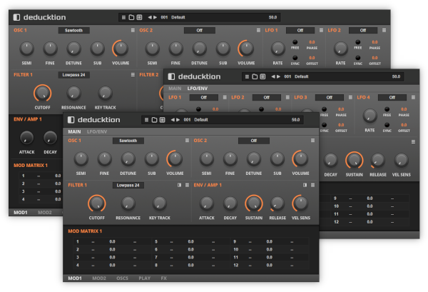

Navigation
next
previous
|
Dead Duck Software
»
Deducktion
Deducktion
¶

Contents
¶
Overview
Installation
User Interface
Controls
Section Menus
The Top Bar
Deducktion Logo
System Panel
System Menu
Presets
Settings
Master Volume
The Central Panel
Oscillators
Sub Oscillators
Filters
Envelopes
LFOs
The Lower Panel
The PLAY Page
The FX Page
The Modulation Matrix
Modulation Sources
Modulation Targets
Table of Contents
Reducktion
Deducktion
Contents
Overview
The Top Bar
The Central Panel
The Lower Panel
The Modulation Matrix
Free Effects
Classic Instruments
Navigation
next
previous
|
Dead Duck Software
»
Deducktion